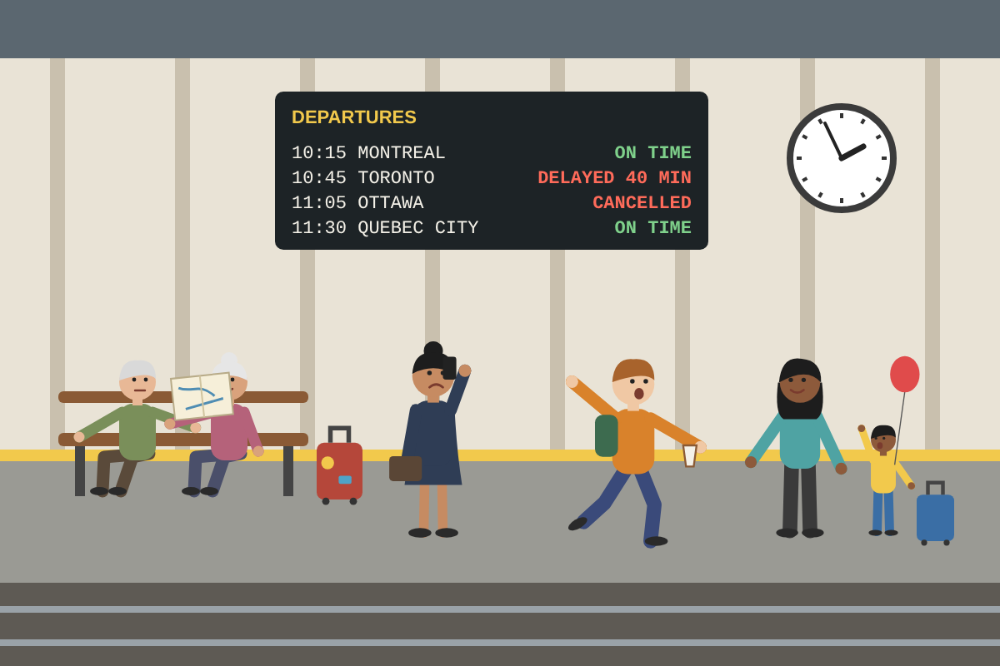

Questions
- What is similar about the two pictures? What is different?
- In which picture are the people under more pressure? Why do you think so?
- Which situation would you prefer to be in? Why?
Useful language for comparing
Both pictures show... · In the first picture..., whereas in the second... · The people in the first picture look more..., while... · One big difference is...
They might be... · She must be... because... · It looks as if...